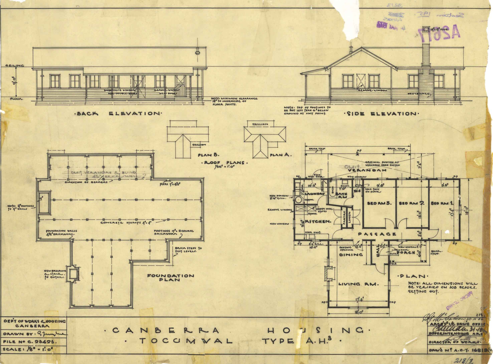
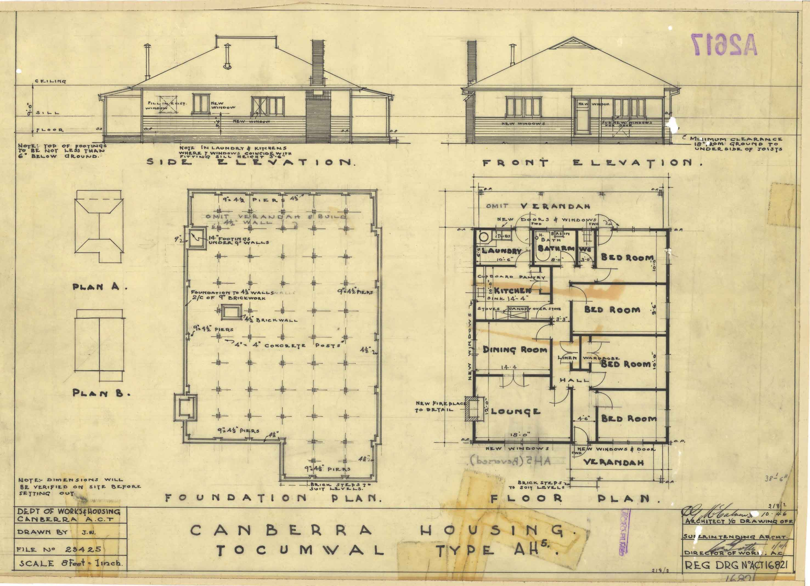
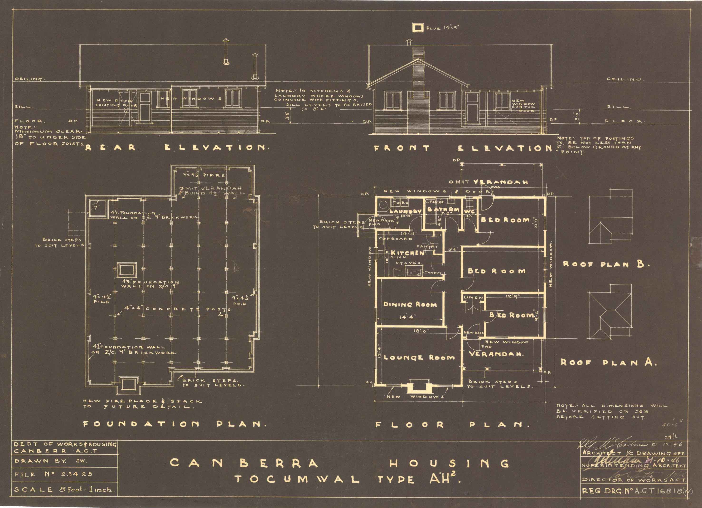

Tocumwal Drawing № 1
These are drawings and technical data for building a house from the foundation to the roof.
Tocumwal Drawing № 2
The house has an area of only 76.2 square meters, which is quite suitable for low-budget construction. On the ground floor there are all the necessary facilities for a family of 4 people. The kitchen is conveniently located next to the living room.
Tocumwal Drawing № 3
Block 5 Section 36 Transported by father-in-law in his Jaguar our family arrived at Block 5 section 36, O'Connor.
Introduction
Five thousand people were involved in the construction of the base which was designed to stage bombing raids and reconnaisance flights, as well as take the role of the first training centre in the The Royal Australian air force officially took over the running of Tocumwal in November 1942, establishing it as a hospital and training base.Information from Thematic Study: WWII Aerodromes and associated structures in New South Wales, New South Wales Heritage Office, 2000, and military historians Dr Darryl McIntyre and Noel Flanagan
Statement of Signifigance
The Tocumwal Housing Precinct in O'Connor is significant as an outstanding example of low cost pre-fabricated housing, which was constructed in Canberra after World War 2. As part of the Government's solution to the critical housing shortage being experienced in Canberra at the time, many of the houses originally constructed at Tocumwal in NSW for the US Army Air Corps were re-erected in the ACT. The cottages are of distinctive design types and limited geographically to the O'Connor Precinct and a small area in Ainslie. The Precinct remains the most intact example of this style of housing and is unique in Canberra for its urban planning, landscaping and social history. The eight culs de sac evident in the precinct share access onto a community recreation area with the individual identity of each street reinforced by the street plantings. Many of the cottages retain their original hedge plantings. The 'precinctual' planning is thus significant. The sense of cohesion of the streetscapes within the Precinct is achieved by the repetition of features in the housing stock, and the integration of this with unifying street plantings and hedges. It creates an area of high aesthetic value. Note: Features Intrinsic To The Heritage Significance Of The Place The place comprises: a) the extant ‘Tocumwal’ houses on blocks identified in Figure 43 (affected properties listed in Schedule 1); b) the existing subdivision pattern; c) the road layout including the culs de sac and their streetscapes; d) the public open spaces contained within the Precinct.
Tocumwal House
The Tocumwal Housing Precinct in O'Connor is significant as an outstanding example of low cost pre-fabricated housing, which was constructed in Canberra after World War 2. As part of the Government's solution to the critical housing shortage being experienced in Canberra at the time, many of the houses originally constructed at Tocumwal in NSW for the US Army Air Corps were re-erected in the ACT. The cottages are of distinctive design types and limited geographically to the O'Connor Precinct and a small area in Ainslie. The Precinct remains the most intact example of this style of housing and is unique in Canberra for its urban planning, landscaping and social history. The eight culs de sac evident in the precinct share access onto a community recreation area with the individual identity of each street reinforced by the street plantings. Many of the cottages retain their original hedge plantings. The 'precinctual' planning is thus significant. The sense of cohesion of the streetscapes within the Precinct is achieved by the repetition of features in the housing stock, and the integration of this with unifying street plantings and hedges. It creates an area of high aesthetic value
House Project
Five thousand people were involved in the construction of the base which was designed to stage bombing raids and reconnaisance flights, as well as take the role of the first training centre in the The Royal Australian air force officially took over the running of Tocumwal in November 1942, establishing it as a hospital and training base.Information from Thematic Study: WWII Aerodromes and associated structures in New South Wales, New South Wales Heritage Office, 2000, and military historians Dr Darryl McIntyre and Noel Flanagan